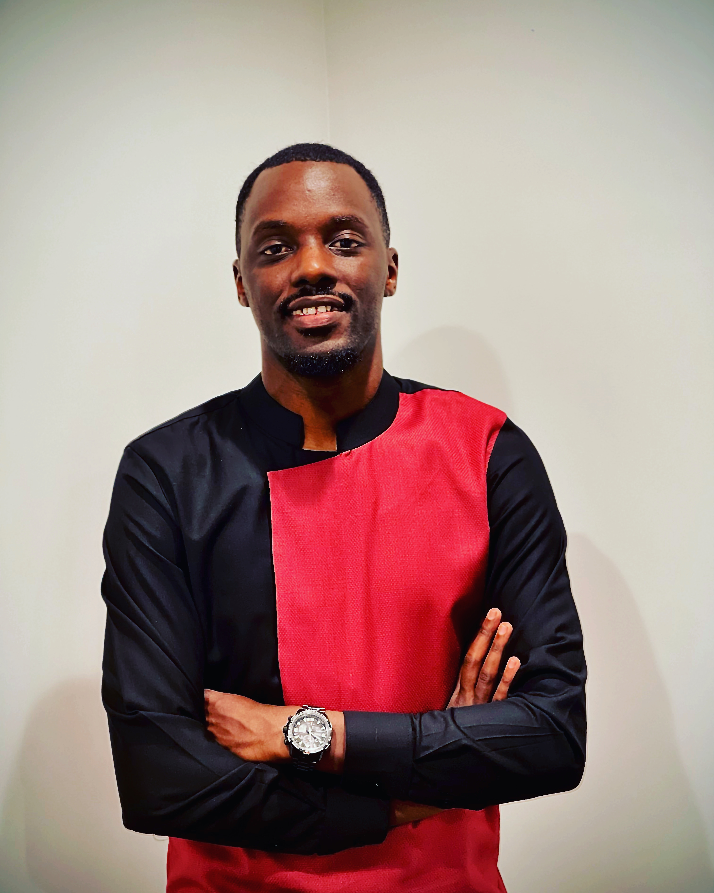

Jordan Josias Nkina

Summary
Motivated individual with a strong desire to grow technical skills and ability to learn new technologies. Team player with excellent communication, collaboration skills, strong organizational and planning abilities.
Education
- International School of Gitega, Burundi (High School Diploma, 2012)
- Southern Maine Community College, South Portland, ME Associate Degree in Computer Science (Expected 2025)
Work Experience
Manufacturing Technician, IDEXX Laboratories
July 2016 - October 2019.
- Performed various manufacturing tasks to formulate and inspect products.
- Cross-trained in multiple work centers.
- Recorded real-time information in Product Documentation.
- Identified and recommended process and safety improvements.
- Ensured accuracy in item identification and part numbers.
Direct Support Professional, Woodfords Family Services
October 2019 - 2021.
- Provide direct assistance to Participants in self-help, socialization, and adaptive skills.
- Develop and implement individual treatment plans for residents and assist with daily living activities.
- Administer medication as instructed.
- Document daily progress towards consumer's goals.
Residential Service Technician, The Opportunity Alliance
November 2019 - April 2022.
- Provide personal support and counseling to residents.
- Work as part of the clinical team in assisting with daily living tasks.
- Monitor physical and mental health well-being, administer medications, and offer personal support.
- Maintain a clean and organized facility and keep staff office charts up-to-date.
Residential Support Worker, Shalom House
August 2021 - Present.
- Provide personal support and counseling to residents.
- Work as part of the clinical team in assisting with daily living tasks.
- Monitor physical and mental health well-being, administer medications, and offer personal support.
- Maintain a clean and organized facility and keep staff office charts up-to-date.
Skills
- Microsoft Office Suite
- Bilingual: Fluent in French, and English and open to learning new languages.
- Customer Service
- Organizational Skills
Certifications
Other